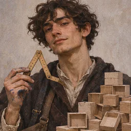
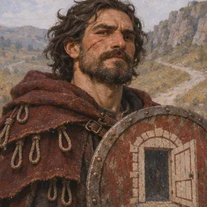
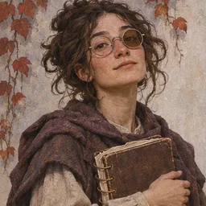
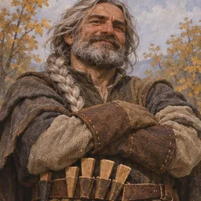
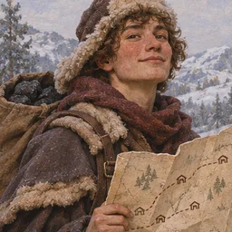

Мира Тёплая Чаша
жрец 3 · ОЗ 24 · КД 11 · Скорость 30 фтСлушательница и хранительница малого дорожного святилища
Шерстяная накидка, плоская медная чаша и привычка ставить свой стул на уровне собеседника.
Дара позвала тебя, потому что ты умеешь слышать просьбу за вежливым согласием.
Открыть фигурку для поля
Оружие и заклинания
Оружие · Боевой посох
Заклинания · Лечащее слово, Обнаружение магии

Лев Косая Мера
плут 3 · ОЗ 24 · КД 13 · Скорость 30 фтПоверщик странных вещей и наблюдатель
Пальцы в чернилах, складная линейка и множество маленьких пустых коробочек.
Один из плодов развернулся за твоей лампой; ты пришёл с наблюдением, а не с готовым объяснением.
Открыть фигурку для поля
Оружие и заклинания
Оружие · Рапира, Короткий лук

Тарен Узельщик
воин 3 · ОЗ 31 · КД 11 · Скорость 30 фтПроводник и защитник свободного выхода
Короткий плащ с многочисленными петлями и потрёпанный щит, на котором нарисована открытая дверь.
Ты доставлял груши, не зная об их странности; теперь предлагаешь дорогу к ответам, не обещая чудес.
Открыть фигурку для поля
Оружие и заклинания
Оружие · Длинный меч, Ручной топор

Хава Полутень
волшебник 3 · ОЗ 20 · КД 12 · Скорость 30 фтИсследовательница отражений
Очки с разными стёклами и тетрадь, в которой неудачные предположения не зачёркнуты.
Ты ищешь явление, которое нельзя объяснить единственной красивой формулой.
Открыть фигурку для поля
Оружие и заклинания
Оружие · Боевой посох
Заклинания · Обнаружение магии, Туманный шаг

Демар Семь Колёс
воин 3 · ОЗ 31 · КД 11 · Скорость 30 фтМастер переносных приспособлений
Седая коса, широкие рукавицы и ремень с деревянными клиньями.
Ты принёс в Дом Фонарей стол, за которым могут сидеть люди разного роста и подвижности.
Открыть фигурку для поля
Оружие и заклинания
Оружие · Длинный меч, Ручной топор
Сея Тихая Нить
жрец 3 · ОЗ 24 · КД 11 · Скорость 30 фтХранительница обещаний добровольной помощи
Простой дорожный костюм, связка цветных нитей на запястье и спокойный, хорошо слышный голос.
Ты умеешь составлять обещания, которые можно выполнить и от которых можно отказаться.
Открыть фигурку для поля
Оружие и заклинания
Оружие · Боевой посох
Заклинания · Лечащее слово, Обнаружение магии

Вар Снежная Кромка
плут 3 · ОЗ 24 · КД 13 · Скорость 30 фтРисовальщик маршрутов и полевой собиратель
Сумка с углём, мягкие сапоги и карта, на которой отмечены места отдыха.
Ты хочешь составить карту не чудес, а способов вернуться от них домой.
Открыть фигурку для поля
Оружие и заклинания
Оружие · Рапира, Короткий лук